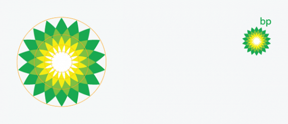

Comment appliquer le Nombre d’Or pour obtenir un logo efficace ?
Introduction
En dehors des designers, beaucoup ont déjà entendu parler du nombre d’or sans être en mesure de savoir ce que c’est. Pourtant, celui-ci est au cœur de nos vies au quotidien. Et pour vous assurer un logo esthétique, il doit aussi être au cœur de ce dernier.
Depuis la nuit des temps, la beauté et l’esthétique sont célébrées. Mais en dehors des personnes dont c’est le métier, peu de gens savent que les créations les plus efficaces, les plus équilibrées et parmi les plus convaincantes, suivent une sorte de fil conducteur mathématique. C’est en 1860 que le physicien et psychologue Gustav Theodor Fechner proposa un nombre définissant l’équilibre naturel du monde qui nous entoure : le Nombre d’Or !
L’expérience de Fechner part d’un constat simple : on place 10 rectangles différents dans leur rapport longueur-largeur face à une personne, et on invite alors cette dernière à sélectionner celui qu’elle trouve le plus esthétique. Les résultats ont démontré que tout naturellement, le choix privilégié est le « Rectangle d’Or », construit avec le nombre du même nom (environ 1,618).
Moyenne d’Or, Section d’Or, Divine Proportion ou encore Grille d’Or, tous sont les noms courants utilisés pour ce qui découle de l’application du nombre Phi, 1.61803398875, et découvert par le mathématicien italien Leonardo Fibonacci (qui donna son nom à la Suite de Fibonacci).
Mais qu’est-ce que ce nombre a de si spécifique ? Certains pensent qu’il est le résultat le plus efficace et résulte de forces naturelles. D’autres encore croient qu’il est une constante universelle de l’Univers, la signature de Dieu pour ainsi dire. Peu importe ce que vous pensez croire, force est de constater que Phi est partout, dans tout ce que nous voyons et expérimentons. Il permet l’équilibre, l’harmonie et la beauté dans tout ce que la nature conçoit. Et l’être humain passant son temps à imiter ce que fait la nature, il n’est en rien surprenant que celui-ci se serve de cette proportion dans ses propres réalisations Art, architecture, couleurs, utilisation de l’espace ou bien musique : du Parthénon à Mona Lisa, des pyramides d’Égypte aux cartes de crédit, Phi est là. Tout le temps.
La Grille d’Or
Sachant cela, cela n’étonnera alors personne Phi se retrouve utilisé dans la conception de logos. Sans aller aussi loin dans son application que les exemples qui vont suivre,j’en suis moi-même un utilisateur dans mon travail. A commencer par l’usage d’une Grille d’Or pour mes mises en pages. Certains connaissent la règle de tiers ? Et bien ça ressemble à une règle de tiers, ça a l’odeur d’une règle de tiers, mais ce n’est pas une règle de tiers. Pour illustrer mon propos, voici un comparatif entre les deux grilles.
La Grille d’Or est donc conçue en utilisant le ration 1/1,16 de Phi pour son tracé.
Des logos basés sur le nombre d’Or
La Grille d’Or, c’était le hors-d’œuvre. Maintenant, on va aller plus loin en regardant les différentes façons dont est utilisé Phi. Et c’est là que vous allez commencer à comprendre qu’un logo efficace ne se fait pas en deux coups de crayon et trois clics de souris… Car en plus d’obéir à la Divine Proportion (bien que ce ne soit pas pour autant une obligation), un logo répond à des codes visuels, esthétiques, typographiques. Afin d’illustrer un peu toutes cette partie théorique, voici quelques exemples de marques populaires qui ont utilisé le Nombre d’Or pour obtenir l’équilibre ainsi qu’une harmonie parfaite dans leurs logos. Bien qu’il y ait deux-trois marques que je peux pas voir en peinture, mais les exemples proposés par le regretté Bansktblog étant bien faits, je suis allé à la facilité.
Grupo Boticário : le logo de la compagnie brésilienne Grupo Boticário a été conçu par le bureau brésilien de FutureBrand. Ce logo utilise une Spirale d’Or. En géométrie, une Spirale d’Or est une spirale logarithmique dont le facteur de croissance est Phi, le Nombre d’Or (vous suivez ?). Autrement dit, une Spirale d’Or devient plus large par un facteur de Phi pour chaque quart de tour qu’elle fait. La Spirale d’Or est très proche de la spirale de Fibonacci puisqu’elles utilisent toutes deux Phi.
Le logo de Grupo Boticário utilise un dérivé de la spirale d’or.
La spirale d’or est d’ailleurs très répandue dans la nature. On retrouve cette proportion, par exemple, dans les galaxies à spirales ou bien dans les coquilles des mollusques.
Apple : Apple est l’une des rares entreprises qui à ne pas afficher son nom dans son logo. Et pourtant, le logo Apple est un symboles parmi les plus populaire au monde. Ce logo est parfaitement équilibré car les courbes du contour du logo sont des cercles aux diamètres proportionnés grâce à la suite de Fibonacci. D’après Florent, lecteur du blog, il semblerait que le cas d’Apple tienne plus de la légende, comme c’est expliqué par ici.
Les diamètres des cercles qui forment la structure du logo Apple ont des proportions conformes à la suite de Fibonacci (proportion d’or).
BP : un logo qui utilise le Nombre d’Or pour un pollueur vendeur d’or noir. Quelle ironie… Ce logo là date de l’an 2000. Ce qui semble être simplement un joli logo se révèle cependant être formé de cercles concentriques, proportionnels les uns aux autres grâce à la suite de Fibonacci.

Le diamètre des cercles concentriques qui contiennent les pétales du logo BP suivent le ratio d’or.
Pepsi : le nouveau logo de Pepsi est beaucoup plus simple et efficace (autant que cette boisson à nettoyer vos WC en fait) qu’il ne l’a été. Maintenant, regardez de plus près le schéma ci-dessous… Auriez-vous imaginé que le « squelette » du logo Pepsi suivait le nombre d’or ? Le logo de la marque Pepsi est alors créé par l’intersection de deux cercles proportionnels l’un à l’autre. Et, la proportion est… le Nombre d’Or.
Les deux cercles qui forment l’épine dorsale du logo Pepsi ont des diamètres dont l’écart proportionnel correspond à Phi.
Toyota : le logo de Toyota se compose de trois ovales placées très justement sur une Grille d’Or. « Les deux ellipses qui se croisent sont destinées à représenter le client et le produit, ainsi que l’importance de cette relation », selon Mike Michels, vice-président de la communication chez Toyota Motor Sales USA. « L’anneau extérieur représente la monde et la nature globale de notre entreprise ». « La Grille d’Or est formée par un quadrillage qui provoque plusieurs séparations. Les séparations étant dans le rapport de la Proportion d’Or, Phi ».
Superposition de la Grille d’Or sur le logo Toyota.
La Grille d’Or est donc conçue en utilisant le ration 1/1,16 de Phi pour son tracé.
Le Nombre d’Or dans la nature
On pourrait en écrire des kilomètres sur le Nombre d’Or… Voila plusieurs mois que j’avais envie d’écrire un article sur ce thème, sans savoir par quel bout commencer. Le sujet est tellement vaste, je ne suis pas certains qu’un livre suffirait. J’ai fait alors le choix de vous présenter celui-ci à travers la conception de logos. Pour vous rendre compte de l’importance de ce nombre, voici une petite vidéo sur la présence de celui-ci dans la nature, également emprunté à l’article de Bansktblog, cité plus haut.